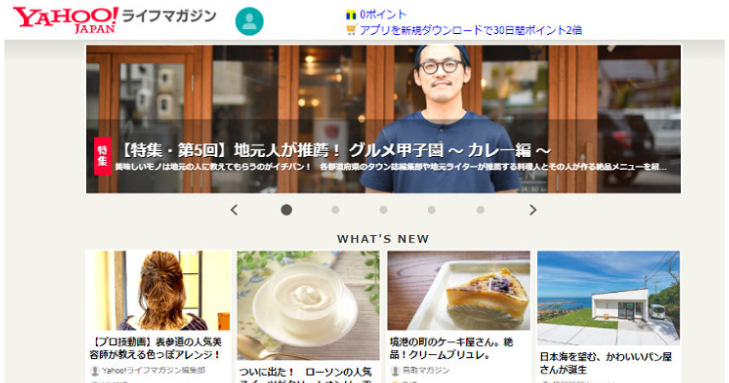
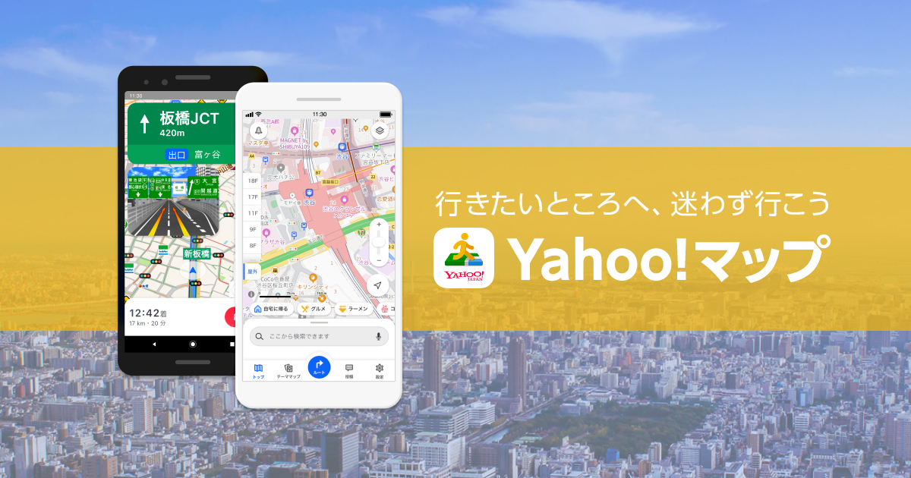
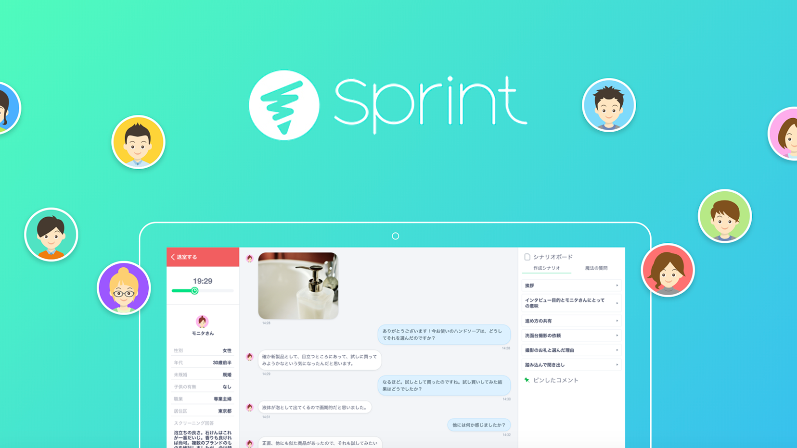

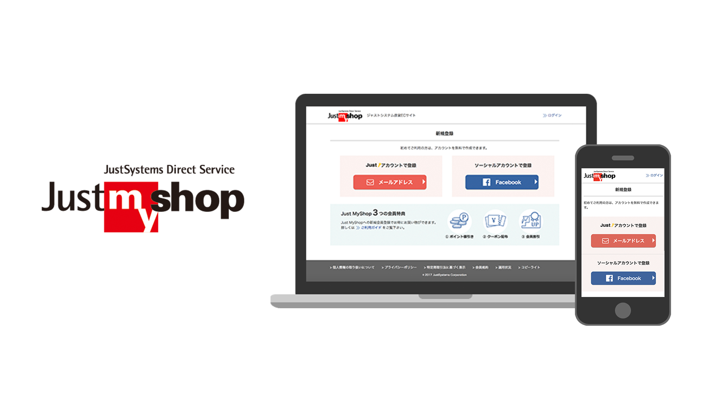


長野県佐久市在住。岩手県出身。
UI/UXデザイナー 兼 UIエンジニアとして、ユーザーリサーチ・情報設計・UIデザインから、PM・エンジニアとの仕様調整まで、プロダクト全体の体験設計に一貫して携わってきました。
ユーザー課題を起点に仮説を立て、設計・リリース・検証のサイクルを回しながらプロダクトを改善し続けることを得意としています。
BtoB・BtoCを問わず、ユーザーの利用フロー・構造全体への理解を大切にしながら、チームとともに課題解決に向き合います。
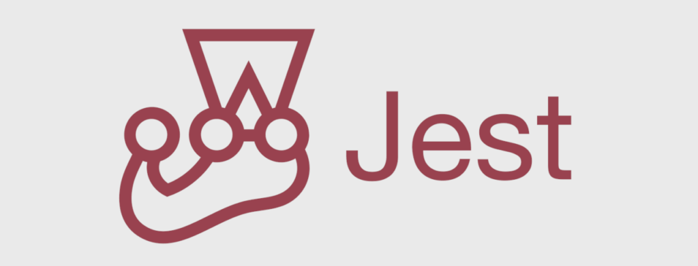
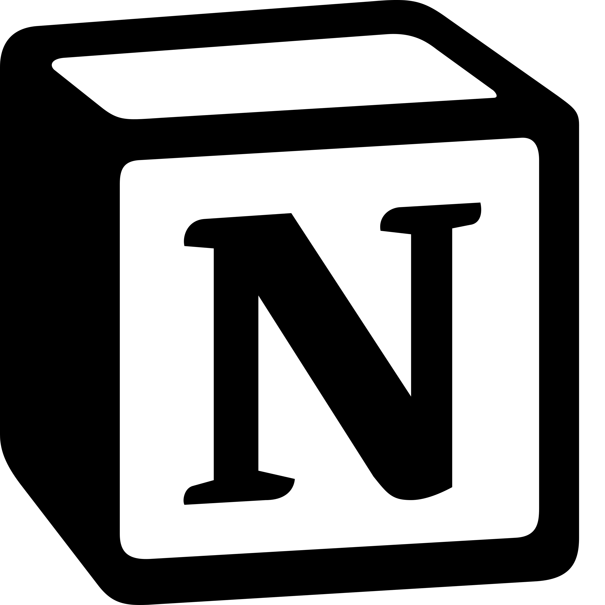

東日本大震災で少しでも地元の役に立てればと活動した一部をご紹介します
＠岩手県遠野市
2011/7
ITで復興支援を考えるHack For Japan岩手版の第１回目イベントに参加しました。
アイディアソンで出たアイディアを基に５つのチームが発足し、私は情報発信チームに所属。震災直後にたちあがった遠野市のボランティアセンター「遠野まごころネット」のWebサイトデザインに携わりました。
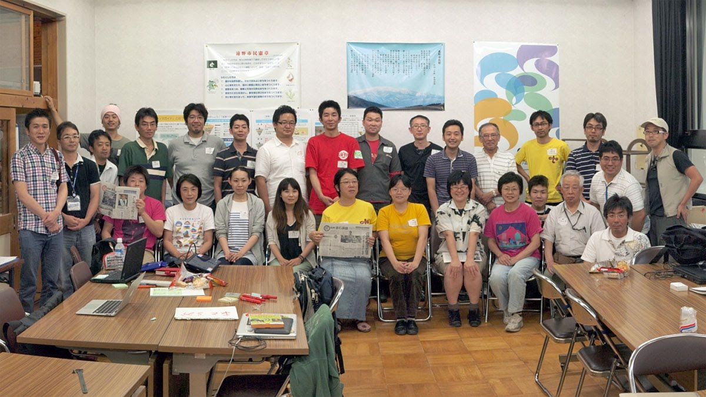
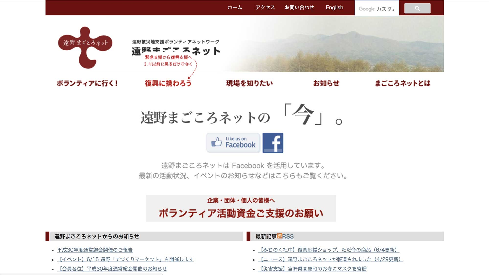
＠岩手県釜石市/陸前高田市
2012/9
海外から来たOpenStreetMapのマッパーの方々を案内しながら、釜石市や陸前高田市など復興していく街の地図づくりのお手伝いをしました。
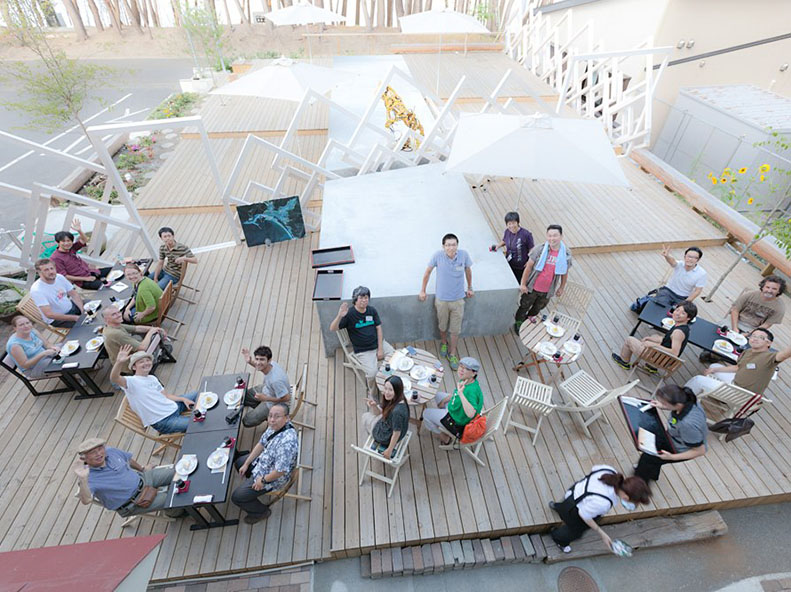
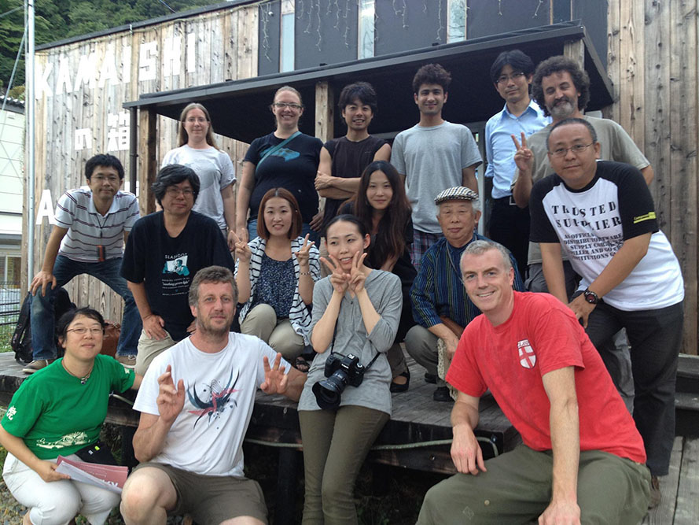
＠HUB TOKYO
2013/3, 2013/7
それまで別々で岩手を応援する活動をしている方々が一同に介したイベント。
各団体のこれまでとこれからの活動報告や、岩手直送の美味しいものを食したり、情報交換をしたり、新しいつながりが生まれ参加者の方々にとって有意義なイベントとなりました。
私はスタッフの１人として、イベント運営の他、スタッフTシャツ・のぼり旗をデザインしました。
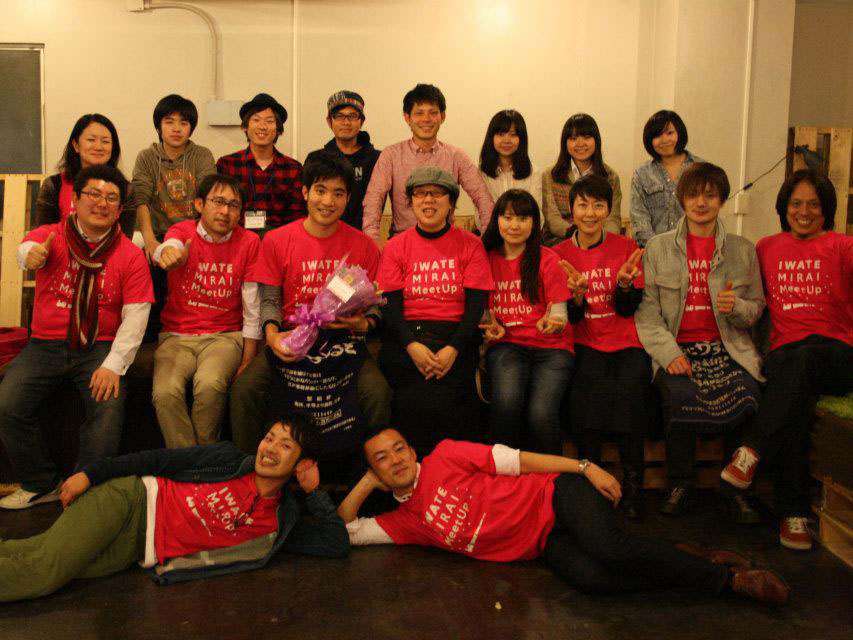
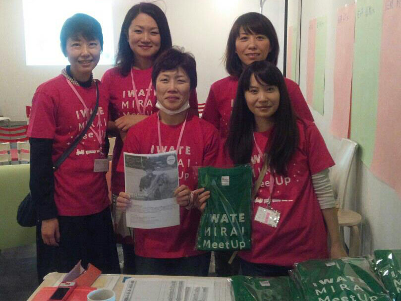
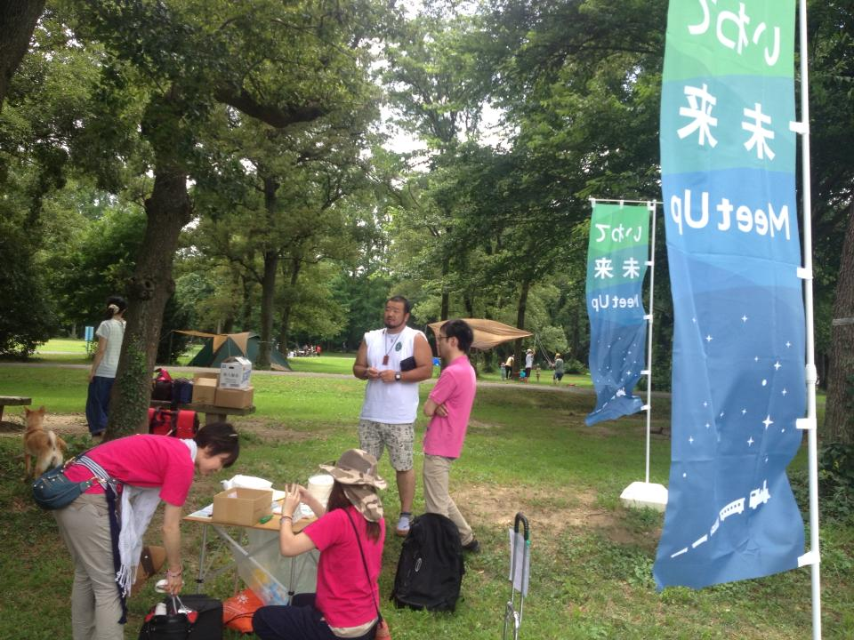
LinkedInからお気軽にご連絡ください。
LinkedIn